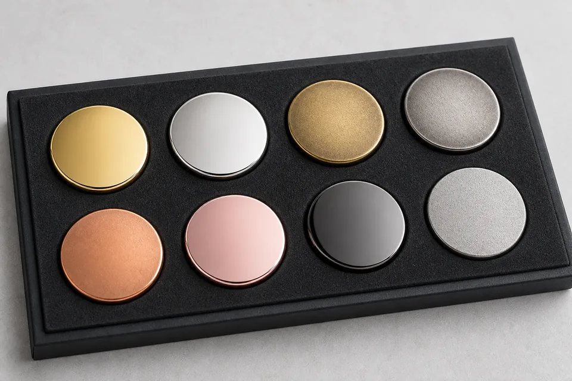

Plating is one of the first things a buyer notices on a custom badge, pin, medal or coin. It defines the visible metal tone, controls reflection and changes the contrast between raised and recessed areas. The same artwork can feel formal in polished gold, technical in bright silver, historic in antique brass or contemporary in black nickel. Because finish has such a strong visual effect, it should be chosen early enough to influence artwork and sample planning.
This guide focuses on decorative metal products rather than engineering coating specifications. It helps buyers compare common finish families and communicate an intended appearance to a manufacturer. If a project has strict corrosion, skin-contact, outdoor or regulatory requirements, state them separately and request a written process specification and relevant testing. A finish name alone is not a complete performance standard.
What plating changes on a custom metal product
After a badge is formed and polished, a thin surface layer creates the final visible metal color. Preparation, plating and any subsequent antique, brushing or coating steps work together. The result depends on the substrate, surface smoothness, geometry and quality control. Highly reflective plating makes polished areas sparkle but can expose scratches or uneven preparation. Antique treatment emphasizes texture and can make complex relief easier to read.
Plating also interacts with enamel. On a soft-enamel pin, raised plated lines frame recessed color. On a hard-enamel pin, metal and enamel are polished to a smooth level surface. On a die-struck badge with no color, the finish and texture carry nearly all visual information. On a coin, the outer rim, relief and edge can each reflect light differently.
Do not choose a finish from a color name alone. 鈥淕old鈥?can appear pale, yellow, rich or warm depending on the specified process and lighting. 鈥淪ilver鈥?may be mirror-bright, satin or antique. Ask for a physical sample or an approved reference when exact tone matters to a brand program.
| Finish | Visual character | Good applications |
|---|---|---|
| Bright gold | Warm, reflective and premium | Recognition pins, awards, hospitality and formal gifts |
| Bright silver | Cool, clean and modern | Corporate badges, technical brands and neutral color palettes |
| Antique gold/brass | Warm relief with dark recesses | Heritage badges, medals and detailed emblems |
| Antique silver | High-contrast gray relief | Coins, service badges and sculpted designs |
| Black nickel | Dark, reflective and contemporary | Fashion pins, dark artwork and premium packaging |
| Copper or rose tone | Warm red or pink metal | Distinctive awards, lifestyle brands and decorative pieces |
Bright gold and silver plating
When bright gold works
Bright gold creates an immediate sense of recognition and ceremony. It works well with navy, black, red, green and white enamel because the warm metal outlines remain visible. Gold is frequently chosen for executive gifts, anniversary pins, award medals, hotel badges and commemorative coins.
The risk is excessive reflection or a tone that conflicts with the artwork. Fine lettering surrounded by bright polished metal may become harder to read under direct light. Large uninterrupted gold areas can show surface marks more readily. Sandblasting selected recesses, using enamel or adding an antique effect can create needed contrast.
When bright silver works
Bright silver is neutral and adaptable. It supports cool color schemes and gives custom metal pins a clean technical appearance. Silver outlines can make blue, black and vivid enamel feel crisp without introducing the warmth of gold. It is also useful when badges must coordinate with chrome hardware, silver jewelry or gray uniforms.
Like gold, mirror-bright silver reflects its environment. In product photographs it may appear dark in one area and white in another. This is normal reflection rather than inconsistent color. If the buyer wants a quieter appearance, a satin, brushed or sandblasted treatment may be more suitable than a full mirror polish.
How antique finishes create contrast
Antique finishing introduces a dark tone into recessed areas and then reveals lighter raised surfaces. The exact process can vary, but the visual goal is consistent: create depth and readability. Antique gold, antique brass, antique silver and antique copper are common choices for relief-heavy badges, coins and medals.
An antique finish is especially effective when the design contains small textures, lettering or layered sculpting. Dark recesses separate adjacent forms without requiring enamel lines. For a traditional crest or challenge coin, this can produce a more coherent result than filling every area with color.
Antique does not mean uncontrolled or dirty. The sample should show an intentional distribution of dark and light areas. Deep recesses may remain dark, broad high points may be polished and intermediate texture may create a gradual transition. If the buyer wants only selected areas antiqued, that requirement needs to be discussed before production.

Antique finish with or without enamel
Antique metal-only products depend on relief and texture. Adding a limited enamel color can highlight a central symbol while retaining an aged background. Soft enamel often complements antique plating because both emphasize recessed areas. Hard enamel creates a flatter polished face and is more commonly paired with clean bright outlines, although special combinations are possible after process review.
If enamel color accuracy is critical, remember that surrounding metal changes perceived color. The same red may look richer beside warm gold and cooler beside silver. Approve the complete color-and-metal combination rather than evaluating the enamel chip by itself.
Copper, rose gold, black nickel and two-tone options
Copper finishes range from bright orange-red metal to deeper antique copper. They work well for third-place medals, vintage themes, craft brands and warm color palettes. Rose gold has a softer pink character and is often used for lifestyle, fashion and commemorative designs. Both should be sampled when exact tone matters because photography and screen color vary.
Black nickel gives a dark reflective border that can feel modern and understated. It works with light enamel and monochrome designs, but very dark enamel next to black metal may lose separation. A polished black surface also reflects surrounding light, so it should not be judged as a flat black paint.
Two-tone finishes combine different visible metal colors on one piece. They can create a premium result, but they generally require additional masking or selective processing. The artwork must make the boundary practical, and the quotation should clarify which areas receive each finish. Two-tone plating is best reserved for designs where the contrast adds real value rather than being used as decoration without hierarchy.
Polished, brushed, sandblasted and textured surfaces
Plating color is only half the finish decision. Surface texture controls how the color reflects. Polished metal gives sharp highlights. Brushing creates directional lines and a softer industrial appearance. Sandblasting produces a fine matte texture that separates recessed backgrounds from polished relief. Molded texture can simulate stone, fabric, stippling or repeated patterns.
A common approach is to polish raised borders and symbols while sandblasting recessed fields. This gives a readable metal-only design without enamel. On name plates, brushing can support a professional equipment aesthetic. On medals, a combination of polished high points and textured backgrounds makes relief more visible in event photographs.
Texture should be shown on the artwork proof using clear notes, but a screen mockup is not sufficient for final approval. Ask to see a physical sample from the intended tooling when texture density and reflection are central to the design.
Plating around printing and enamel
Digital printing, soft enamel and hard enamel each create a different boundary with plated metal. Printing can reproduce gradients but may need a flat prepared surface and protective coating. Soft enamel leaves tactile raised outlines. Hard enamel creates a smooth polished plane. Read the soft versus hard enamel guide before choosing plating, because the construction changes how much metal remains visible.
Durability, handling and environmental expectations
A decorative badge carried in a presentation box has different demands from a keychain handled every day. Friction, moisture, skin contact, chemicals, outdoor exposure and storage all influence appearance over time. Tell the manufacturer where and how the piece will be used. Do not assume that a finish described as 鈥済old鈥?or 鈥渟ilver鈥?automatically meets a particular thickness, salt-spray duration or wear standard.
For ordinary branded items, careful storage and individual packing reduce scratches before delivery. Protective coating may help certain finishes, but it can subtly change gloss or feel. For industrial or regulated use, request a documented coating stack and test plan. BadgeCraft Metalworks can discuss RoHS-related material requirements where applicable, but the exact requirement should be stated on the order rather than inferred from a generic product category.
Clean decorative metal with a soft dry cloth. Avoid aggressive polish unless the supplier confirms it is suitable, because abrasive cleaners can alter antique recesses or protective coatings. Separate pieces during transport so raised edges do not rub against adjacent faces.
How to inspect a plated production sample
Begin under diffuse neutral light, then tilt the sample slowly. Bright areas should reflect smoothly without obvious clouding, bare spots or strong color variation. Check corners, deep recesses, side walls and the area around posts because these locations can reveal incomplete coverage more readily than the flat face. Compare antique samples for consistent darkening while remembering that intentional relief creates natural variation.
Next, compare the sample with approved enamel colors, backing and packaging. A finish that looks correct by itself may reduce contrast next to dark enamel or reflect the color of a presentation box. Handle the piece as the customer will: attach a pin to fabric, place a medal on its ribbon, rotate a keychain and remove a coin from its case. This confirms whether reflection, texture and weight support the intended experience.
For bulk inspection, define an approved master sample and objective checkpoints. These may include finish name, visible tone range, polished and matte locations, acceptable surface marks, edge coverage and packing protection. If a formal corrosion, adhesion or restricted-substance test is required, identify the method and acceptance criteria before the order. Visual approval and laboratory compliance answer different questions and should not be substituted for one another.
How to specify plating in a quote request
A clear finish brief should include more than 鈥済old badge.鈥?Provide:
- Requested metal color: bright gold, silver, copper, rose gold, black nickel or antique family.
- Surface treatment: polished, satin, brushed, sandblasted or molded texture.
- Areas that should remain bright, matte, dark, colored or printed.
- Base material and process if already selected.
- Expected use, handling, environment and any testing requirement.
- Reference sample or photograph, understood as a visual target rather than an exact color standard.
- Quantity, dimensions, attachment and packaging.
Vector PDF or layered PSD artwork helps separate finish areas. If the finish is undecided, send the design and intended brand character. A good supplier can prepare alternatives showing where contrast will be created by enamel, relief, polish or antique treatment.
Frequently asked questions
What is the most popular plating for custom badges?
Gold and silver are both common, but the best choice follows the artwork and brand palette. Antique silver and antique gold are strong for detailed relief; black nickel and copper can create a more distinctive contemporary or vintage result.
What is antique plating?
It is a finish that leaves recessed areas darker and raised areas lighter. The contrast makes lettering and sculpted relief readable without requiring many enamel colors.
Is bright plating more durable than antique plating?
Bright and antique describe appearance, not a universal performance level. Durability depends on preparation, coating specification, protective layers, handling and environment.
Can I approve plating from a rendering?
A rendering is useful for placement and general style, but it cannot reproduce metallic reflection reliably. Approve a physical sample when the finish is important to brand consistency or buyer expectations.
Compare finishes on your badge artwork.
Send the design, size, quantity and intended use. We can recommend plating, texture and enamel combinations for sample approval.